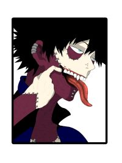
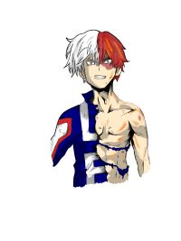
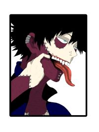
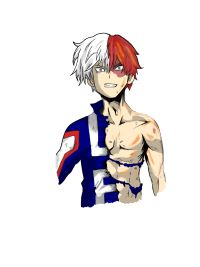

Click on the small images to change the larger image, above.
Cum salvum esse flentes sui respondissent, rogavit essentne fusi hostes. Fortitudinis quaedam praecepta sunt ac paene leges, quae effeminari virum vetant in dolore. Iam id ipsum absurdum, maximum malum neglegi. Sin autem ad animum, falsum est, quod negas animi ullum esse gaudium, quod non referatur ad corpus. Quid ei reliquisti, nisi te, quoquo modo loqueretur, intellegere, quid diceret? Cetera illa adhibebat, quibus demptis negat se Epicurus intellegere quid sit bonum.
Quid ergo aliud intellegetur nisi uti ne quae pars naturae neglegatur? Itaque et manendi in vita et migrandi ratio omnis iis rebus, quas supra dixi, metienda. Sin autem est in ea, quod quidam volunt, nihil impedit hanc nostram comprehensionem summi boni. Beatus autem esse in maximarum rerum timore nemo potest. Sed nonne merninisti licere mihi ista probare, quae sunt a te dicta? Ergo adhuc, quantum equidem intellego, causa non videtur fuisse mutandi nominis.
Habent enim et bene longam et satis litigiosam disputationem. Illum mallem levares, quo optimum atque humanissimum virum, Cn. Sit hoc ultimum bonorum, quod nunc a me defenditur; Nobis Heracleotes ille Dionysius flagitiose descivisse videtur a Stoicis propter oculorum dolorem.